Greece 2019: A Pandemic Memoir of Better Times
Before I turned to coding, I was a graduate student in WashU's M.A. program in Classics. The program lasts two years, and I wanted to make the most of the intervening summer, which would probably be my last chance to participate in a study abroad program. Enter American School of Classical Studies in Athens. This institution offers themed summer seminars designed for graduate students of Classics and related disciplines each year, and summer 2019 featured a seminar titled "Greece from the Sea." Participants were promised a comprehensive investigation into the role of the sea in the life of Greeks, from ancient times to today. The program lasted three weeks, and did I mention that two of those weeks would be spent living on a sailboat and learning to sail?? Count me in!
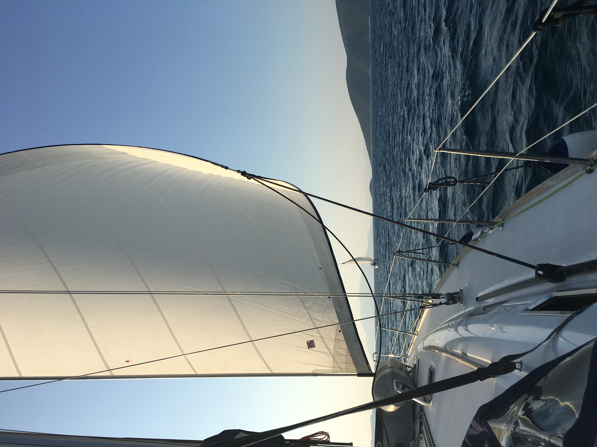
Full sails ahead! Our boat, Nafsika, sailing along Greece's Saronic Gulf.
Life on Nafsika
Our trusty steed, Nafsika, was a ~40ft boat and my home for the duration of the program. Our crew consisted of me and six of my colleagues, along with Captain Nelson, a professor and an experienced sailor. Two more boats rounded out the Greece from the Sea group, and each day we would set out for a new destination as a group and reconvene each evening. Sometimes we would dock our boats in town, but other evenings -- and I really loved these nights -- we would find a calm inlet and drop anchor in the shallow water. Evenings included student presentations on topics related to our theme, family dinners on our boats, and time to hop off the back of the boat and go for a swim. We may have enjoyed a beer or two while floating beside the Nafsika :)
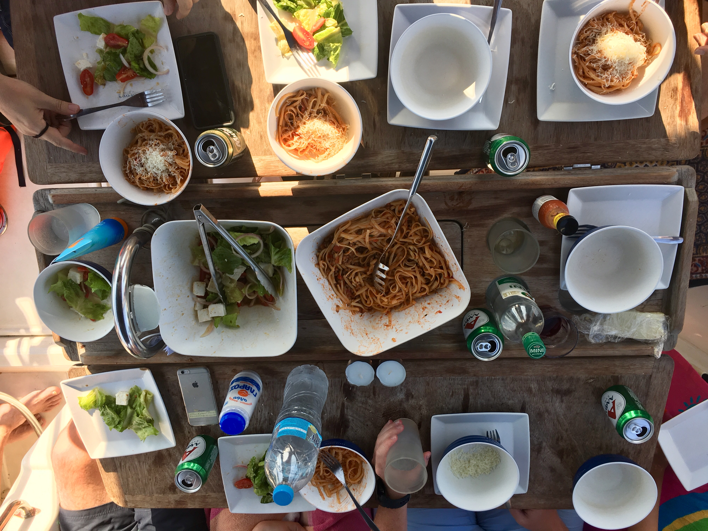 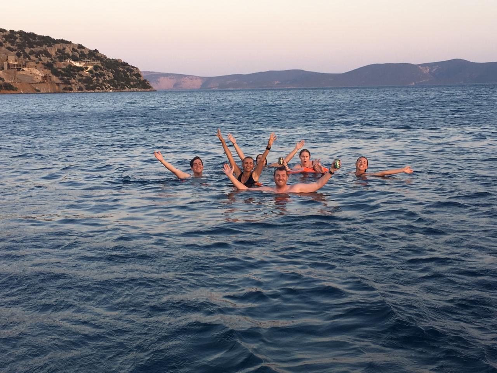
Family dinner on Nafsika while docked in the Gulf of Idra, followed by some swim beers
Archaeological Sites
I know what you're thinking...this was a school trip?! Don't worry, it wasn't all sailing, beer, and sunning on the prow. A decent portion of our days was spent visiting museums and archaeological sites, often in the unforgiving heat of the Mediterranean sun. One notable experience was our visit to the remnants of a Bronze Age (c. 3000-1200BC) palace. All that remained was the foundations, but they revealed an impressively large palace complex, which scholars like to dream belonged to the legendary Ajax from Homer's Iliad. We also had the opportunity to pull out our snorkels and explore underwater archaeological sites, which are submerged now due to the significant rise in sea level in the Mediterranean over the last few millennia.
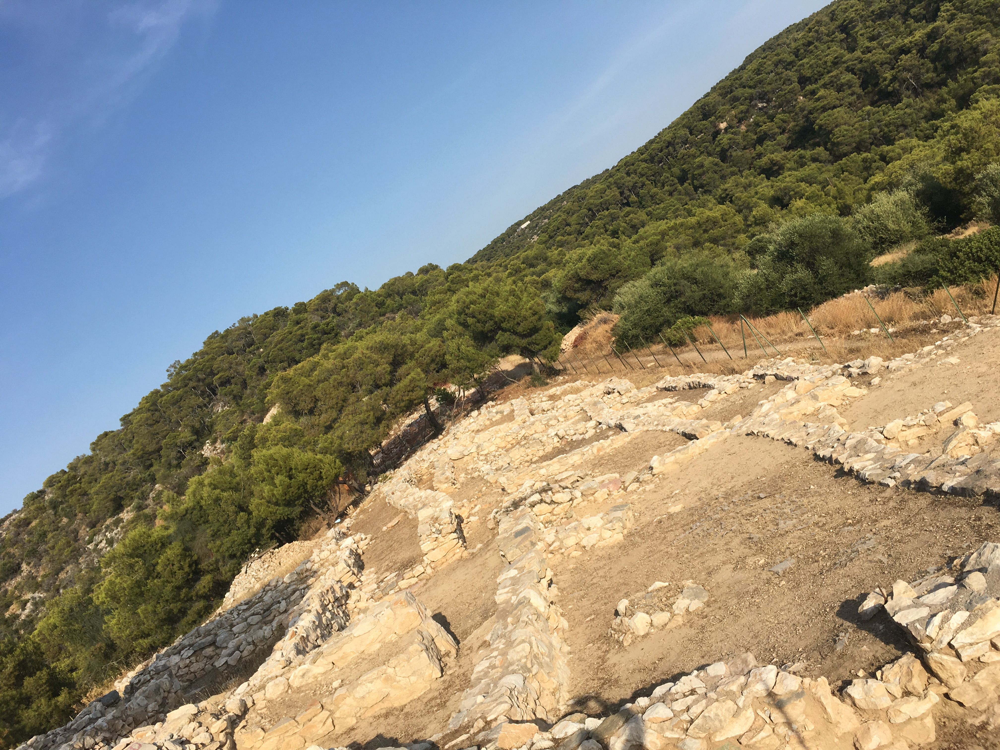
A (crooked) peek at a section of the foundations of Ajax's palace
Nafplio
We marked the halfway point of our voyage with a three-day stay at Nafplio, a popular tourist destination with a rich history. In medieval times, Nafplio was controlled by the Venetians, who crowned the settlement with an impressive fortress at the top of the hill overlooking the city. Nafplio was a beautiful town, and my friends and I took advantage of our extended stay and rented an AirBnB so that we could have air-conditioning-induced, comfortable sleep for a few evenings. Nafplio is also known for its stellar gelato (thanks, Venetians!), and you better believed I indulged more than once :)

The view of town from the Venetian fortress. You can see Nafsika docked down in the harbor with the other boats and the outer wall of the fortress on the right edge of the photo!
Athens
Like all good things, my time on Nafsika had to come to an end at some point. But lucky for me, it wasn't time to leave Greece just yet! I was joined in Athens by my sister and a friend from college, and the three of us spent a few days exploring Athens before setting out to do a little island hopping. Athens is an absolutely beautiful city, and there is SO much history around every corner. It's hard to pinpoint one favorite memory or place, but I did love getting up high and gaining a vantage point over the city. The Acropolis was a great place to do this, but a lesser-known option, and personal favorite of mine, is the view from Mount Lycabettus. It's a bit of a hike to get to the top, but the view is more than worth the sweat. I made the climb twice: once for sunrise and once for sunset.
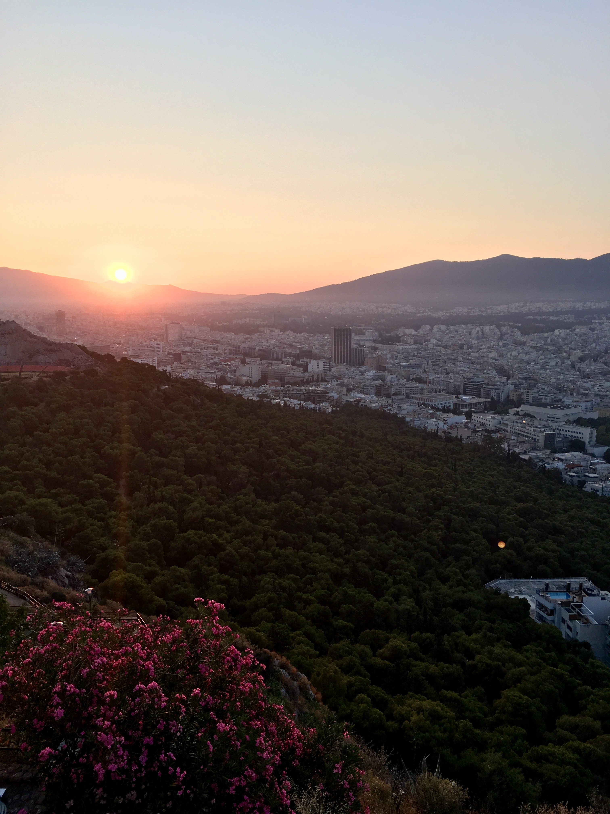 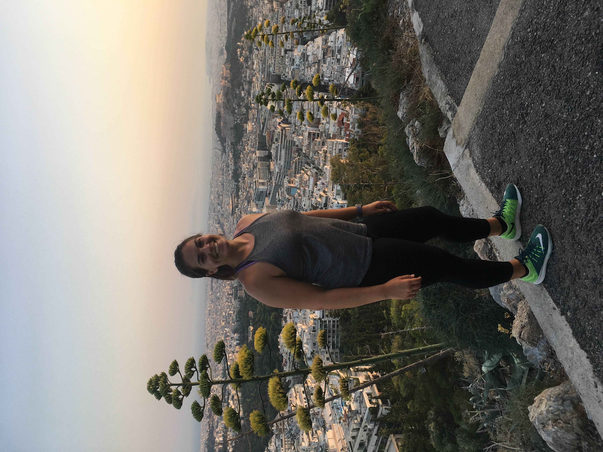
Two moods of Mount Lycabettus: left is at sunrise, and right is at sunset. See if you can spot the Acropolis!
Naxos
After exploring Athens, we took the ferry to Naxos, an island in the Cyclades popular among the Greeks. We only had a short time in Naxos, but we made the most of it and also celebrated my sister's birthday while on our first island. Naxos is known for its gorgeous beaches, nightlife, and cheese, and we sampled them all. It was a gorgeous introduction to the Greek isles.
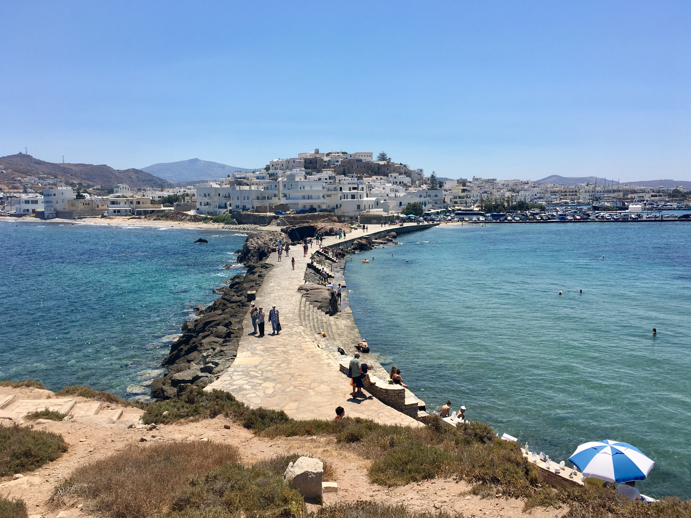
View of the old town portion of Naxos
Crete
Following our short stay in Naxos, we hopped on another ferry to Crete, which is by far the largest of the Greek isles. We spent most of our time on Crete on the western side of the island in the coastal city of Chania. We enjoyed the beaches there, of course, but we also broke out our hiking gear to hike Samaria Gorge, which is housed in a national park. We had an early, early start to catch a bus to the park on the morning of the hike, and the excursion took us the majority of the day. The hike starts in the mountains at the top of the gorge and travels all the way down to the bottom, where the course follows a small river until finally ending at the sea. We definitely earned our dinner that day!
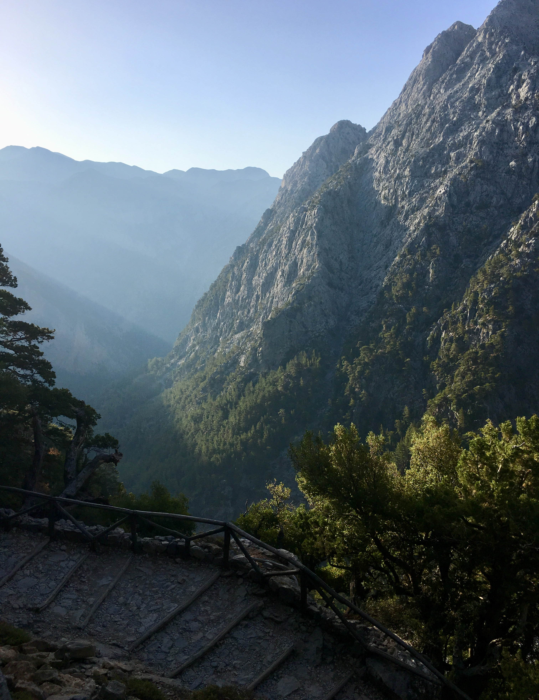
View of the mountains at the top of Samaria Gorge
Food
I have to say, one of the highlights of this trip was the bomb Greek food. I feel like most people's idea of Greek food is gyros, yogurt, and hummus (and these things are absolutely delicious in Greece), the there's so much more than that! One feature of Greek cuisine that I did not expect to be so amazing is the cheese. Fried cheese, spreadable cheese, you name it, they knock it out of the park. The Greeks are also experts at grilled meats, and I had the best kabobs (souvlaki in Greek) of my life in Athens. See below!
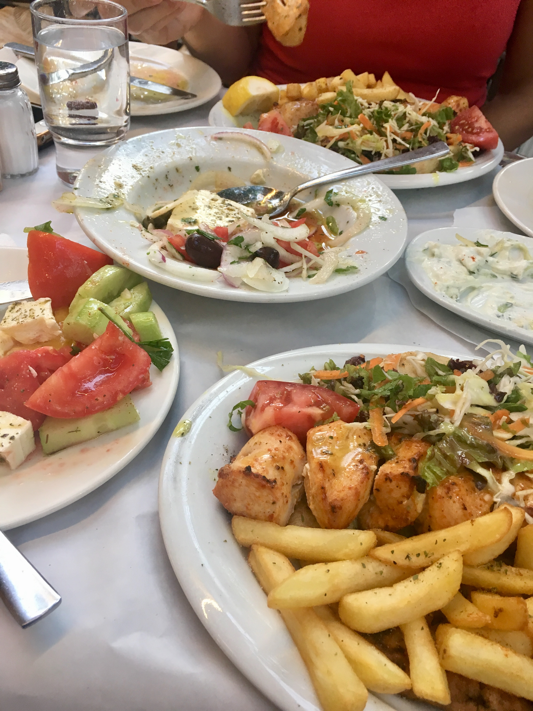
The best meal I had in Greece! Chicken souvlaki, Greek salad, and tzatziki
Friends
My month in Greece was absolutely incredible, and what really made it great was the people I spent it with. I made some great friends on my "Greece from the Sea" trip, and my sister and friend from college were the best travel buddies. Here's to the great times we had together!
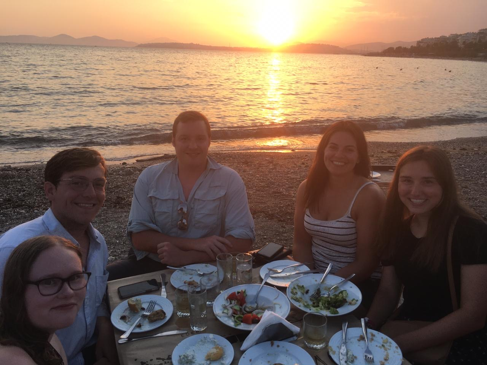 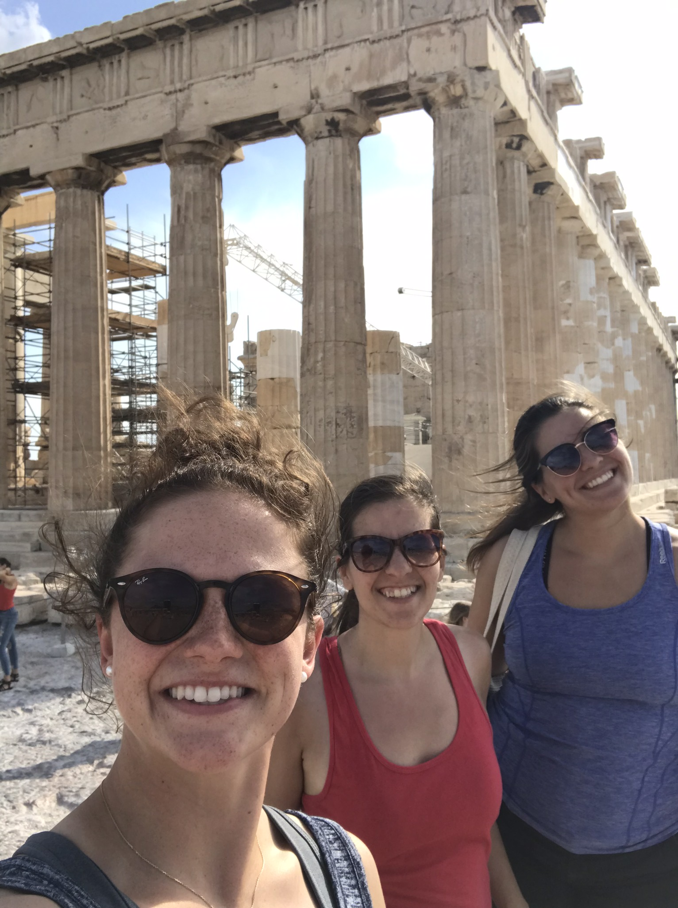